تصوير الحوضPractical Lecture 3: Pelvis Radiography
عملي · م03 · 8.3 دقيقةأقسام المحاضرة (7)
- إسقاطات الحوضProjections Pelvis
- تشريح الحوضPelvis Anatomy
- 1- إسقاط AP للحوض (الوركان معاً)1. AP Pelvis projection (bilateral hips): Pelvis
- 2- إسقاط AP الثنائي بوضعية ساق الضفدع2. AP bilateral frog-leg projection: Pelvis (Modified cleaves method)
- 3- الإسقاط AP المحوري لمخرج الحوض (طريقة تايلور)3. AP axial outlet projection (for anterior-inferior pelvic bones): Taylor method
- 4- الإسقاط AP المحوري لمدخل الحوض4. AP axial inlet projection
- 5- الإسقاط المائل الخلفي للحوض – الحُقّ (طريقة جوديه)5. Posterior oblique Pelvis–acetabulum (Judet method)
إسقاطات الحوضProjections Pelvis
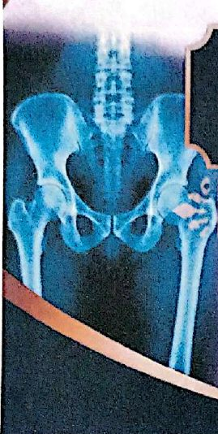
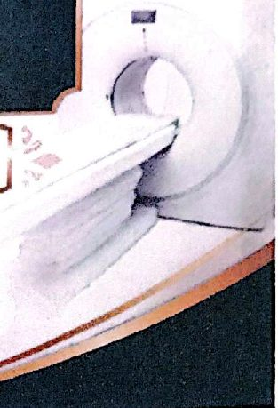
- 1. AP Pelvis projection (bilateral hips): Pelvisإسقاط AP للحوض (الوركان معاً): الحوض
- 2. AP bilateral frog-leg projection: Pelvisإسقاط AP الثنائي بوضعية ساق الضفدع: الحوض
- 3. AP axial outlet projectionالإسقاط AP المحوري لمخرج الحوض
- 4. AP axial inlet projection*: Pelvisالإسقاط AP المحوري لمدخل الحوض: الحوض
- 5. Posterior oblique Pelvis–acetabulumالإسقاط المائل الخلفي للحوض – الحُقّ
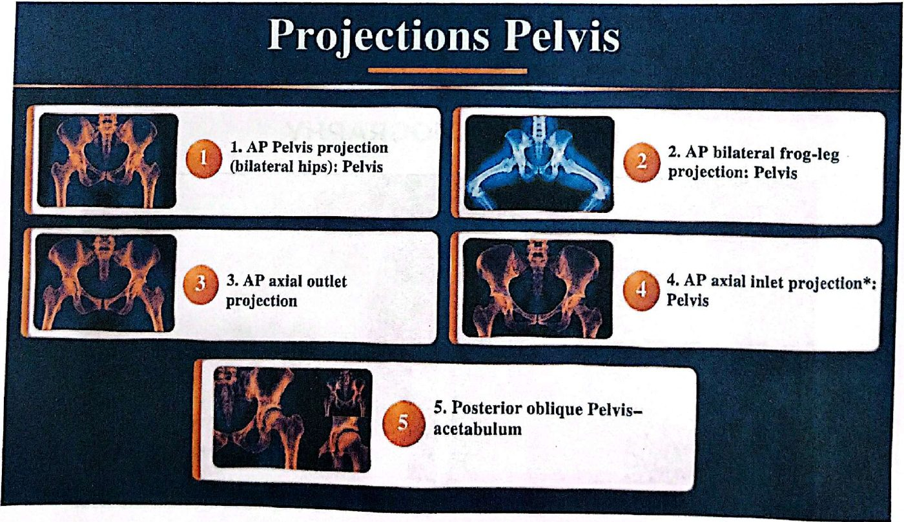
تشريح الحوضPelvis Anatomy
- • (1) Ilium(1) الحرقفة
- • (2) Ischium(2) الإسك
- • (3) Pubis(3) العانة
- • Acetabulumالحُقّ (تجويف مفصل الورك)
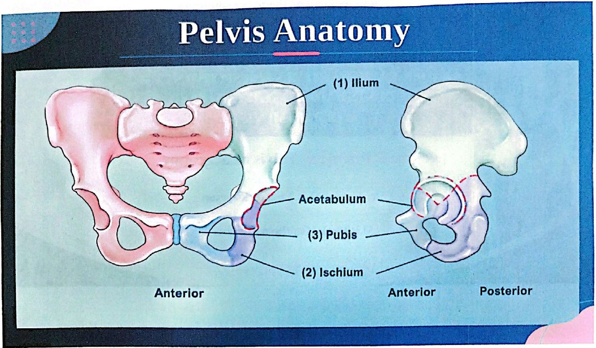
التصوير الشعاعي للحوض: تشريح مقارنPELVIS RADIOGRAPHY
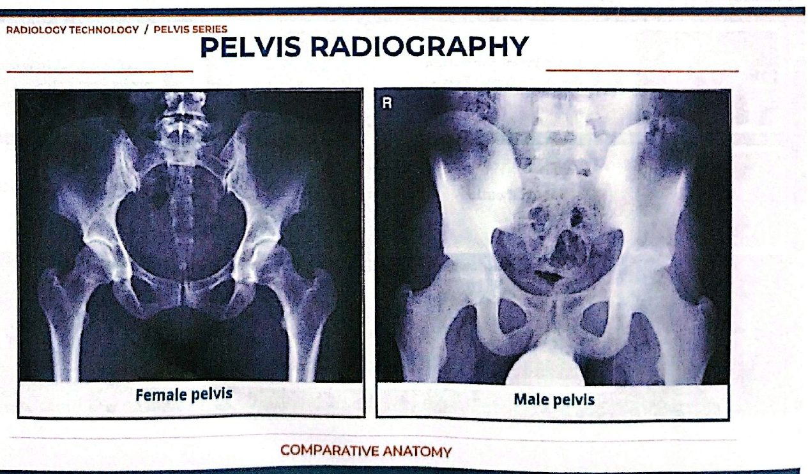
1- إسقاط AP للحوض (الوركان معاً)1. AP Pelvis projection (bilateral hips): Pelvis
دواعي الفحصCLINICAL INDICATIONS
Fractures, joint dislocations, degenerative disease, and bone lesions
الكسور، وخلع المفاصل، والأمراض التنكّسية، والآفات العظمية.
وضعية المريضPATIENT POSITION
Patient supine, place arms at sides or across superior chest, provide pillow for head and support for under knees
المريض مستلقٍ على ظهره (Supine)، والذراعان على الجانبين أو فوق أعلى الصدر، ونضع وسادة للرأس ودعامة تحت الركبتين.
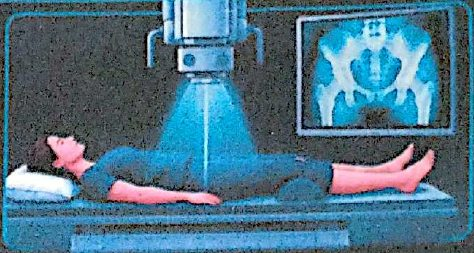
وضعية الجزء المصوَّرPART POSITION
- • Align midsagital plane of patient to centerline of table and to CR.طابِق المستوى السهمي الناصف للمريض مع الخط الأوسط للطاولة ومع الشعاع المركزي (CR).
- • Ensure that pelvis is not rotated; distance from tabletop to each ASIS should be equal.تأكّد أن الحوض غير مُدار؛ يجب أن تكون المسافة من سطح الطاولة إلى كل شوكة حرقفية أمامية علوية (ASIS) متساوية.
- • Separate legs and feet, then internally rotate long axes of feet and lower limbs 15° to 20°باعِد بين الساقين والقدمين، ثم أدِر المحاور الطويلة للقدمين والطرفين السفليين إلى الداخل بزاوية 15 إلى 20 درجة
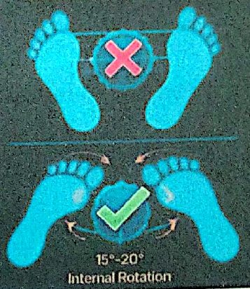
الشعاع المركزيCR
CR is perpendicular to IR, directed midway between level of ASIS and the symphysis pubis. This is approximately 2 inches (5 cm)inferior to level of ASIS.
الشعاع المركزي عمودي على مستقبِل الصورة (IR)، ويُوجَّه إلى منتصف المسافة بين مستوى ASIS والارتفاق العاني. وهذا أسفل مستوى ASIS بنحو 2 إنش (5 سم).
Center IR to CR
مركِز مستقبِل الصورة على الشعاع المركزي.
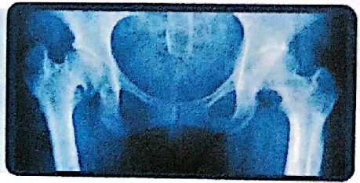
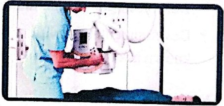
التشريح الظاهرAnatomy Demonstrated
Pelvic girdle, L5, sacrum and coccyx, femoral heads and neck, and greater trochanters are visible
يظهر الحزام الحوضي، والفقرة القطنية الخامسة (L5)، والعجز والعصعص، ورأسا عظمي الفخذ وعنقاهما، والمدوّران الكبيران.
WARNING: Do not attempt to rotate legs internally if a hip fracture or dislocation is suspected.
تحذير: لا تحاول تدوير الساقين إلى الداخل إذا كان هناك اشتباه بكسر أو خلع في الورك.
الشعاع المركزيCR
CR is perpendicular to IR, directed midway between level of ASIS and the symphysis pubis. This is approximately 2 inches (5 cm) inferior to level of ASIS.
الشعاع المركزي عمودي على مستقبِل الصورة، ويُوجَّه إلى منتصف المسافة بين مستوى ASIS والارتفاق العاني، وهذا أسفل مستوى ASIS بنحو 2 إنش (5 سم).
Center IR to CR
مركِز مستقبِل الصورة على الشعاع المركزي.
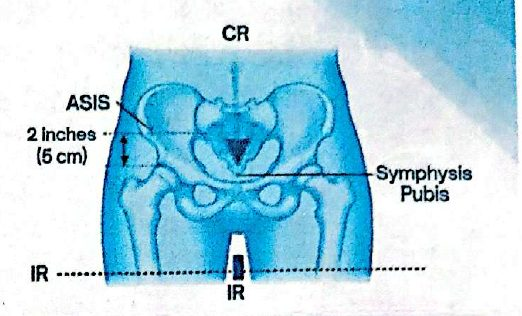
التشريح الظاهرAnatomy Demonstrated
Pelvic girdle, L5, sacrum and coccyx, femoral heads and neck, and greater trochanters are visible.
يظهر الحزام الحوضي، وL5، والعجز والعصعص، ورأسا عظمي الفخذ وعنقاهما، والمدوّران الكبيران.
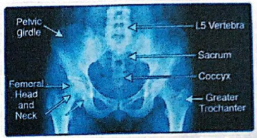
WARNING: Do not attempt to rotate legs internally if a hip fracture or dislocation is suspected.
تحذير: لا تحاول تدوير الساقين إلى الداخل إذا كان هناك اشتباه بكسر أو خلع في الورك.
2- إسقاط AP الثنائي بوضعية ساق الضفدع2. AP bilateral frog-leg projection: Pelvis (Modified cleaves method)
Modified cleaves method
طريقة كليفز المعدَّلة.
دواعي الفحصClinical Indications
- • Demonstration of a nontrauma hipإظهار الورك في غير حالات الإصابة (الرضّ).
- • Developmental dysplasia of hip (DDH), also known as congenital hip dislocation (CHD).خلل التنسّج النمائي للورك (DDH)، ويُعرف أيضاً بخلع الورك الخِلقي (الولادي) (CHD).
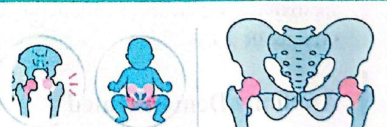
وضعية المريضPatient Position
With patient supine, provide pillow for head and place arms across chest.
المريض مستلقٍ على ظهره، ونضع وسادة للرأس، والذراعان فوق الصدر.
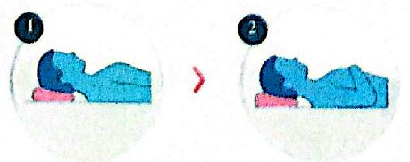
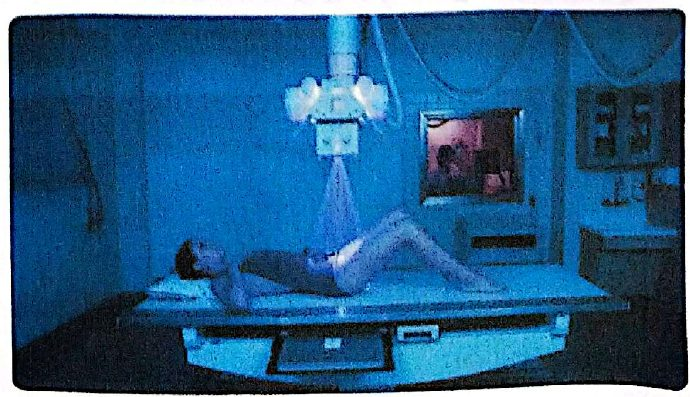
وضعية الجزء المصوَّرPart Position
- • Align patient to midline of table and/or IR and to CR.طابِق المريض مع الخط الأوسط للطاولة و/أو مستقبِل الصورة ومع الشعاع المركزي.
- • Ensure pelvis is not rotated (equal distance of ASIS to tabletop).تأكّد أن الحوض غير مُدار (مسافة ASIS إلى سطح الطاولة متساوية).
- • Center IR to CR, at level of femoral heads, with top of IR Approximately at level of iliac crest.مركِز مستقبِل الصورة على الشعاع المركزي عند مستوى رأسَي عظمي الفخذ، وتكون الحافة العليا لمستقبِل الصورة تقريباً عند مستوى العرف الحرقفي.
- • Flex both knees approximately 90°, as demonstrated.اثنِ الركبتين كلتيهما نحو 90 درجة، كما هو موضّح.
- • Place the plantar surfaces of feet together and abduct both femora 40° to 45° from vertical. Ensure that both femora are abducted the same amount and that pelvis is not rotated.ضع باطنَي القدمين متلاصقين، وبعِّد عظمي الفخذ كليهما 40 إلى 45 درجة عن الوضع العمودي. وتأكّد أن الفخذين مُبعَّدان بالمقدار نفسه وأن الحوض غير مُدار.
- • Place supports under each leg for stabilization if needed.ضع دعامات تحت كل ساق للتثبيت عند الحاجة.
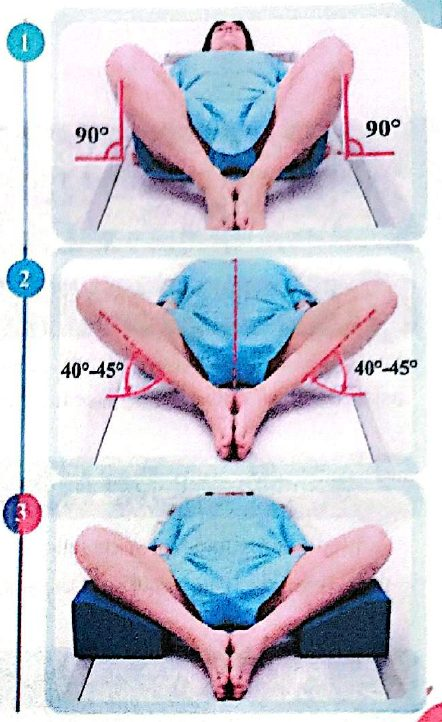
الشعاع المركزيCR
CR is perpendicular to IR, directed to a point 3 inches (7.5 cm) below level of ASIS (1 inch [2.5 cm] above symphysis pubis).
الشعاع المركزي عمودي على مستقبِل الصورة، ويُوجَّه إلى نقطة أسفل مستوى ASIS بـ 3 إنش (7.5 سم) (أي فوق الارتفاق العاني بـ 1 إنش [2.5 سم]).
NOTE: This projection frequently is performed for periodic follow-up examinations on younger patients. Correct placement of gonadal shielding is important for male and female patients, ensuring that hip joints are not obscured.
ملاحظة: يُجرى هذا الإسقاط كثيراً لفحوص المتابعة الدورية للمرضى الأصغر سناً. ووضع واقي الغدد التناسلية بصورة صحيحة مهم للذكور والإناث، مع التأكد من عدم حجب مفصلَي الورك.
التشريح الظاهرAnatomy Demonstrated
Femoral heads and necks, acetabulum, and trochanteric areas are visible on one radiograph.
يظهر رأسا عظمي الفخذ وعنقاهما، والحُقّ، ومنطقتا المدوّرين في صورة شعاعية واحدة.
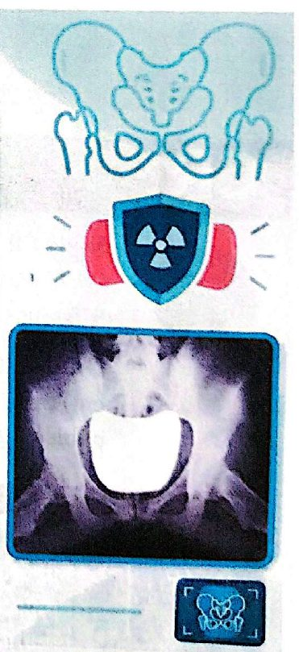
3- الإسقاط AP المحوري لمخرج الحوض (طريقة تايلور)3. AP axial outlet projection (for anterior-inferior pelvic bones): Taylor method
(for anterior-inferior pelvic bones): Taylor method
لعظام الحوض الأمامية السفلية — طريقة تايلور.
دواعي الفحصClinical Indications
Bilateral view of the bilateral pubis and ischium to allow assessment of pelvic trauma for fractures and displacement
منظر ثنائي للعانة والإسك في الجانبين، لتقييم إصابات الحوض من حيث الكسور والإزاحة.
وضعية المريضPatient Position
With patient supine, provide pillow for head. With patient's legs extended, place support under knees for comfort.
المريض مستلقٍ على ظهره، ونضع وسادة للرأس. والساقان ممدودتان، ونضع دعامة تحت الركبتين للراحة.
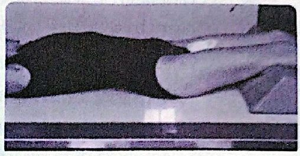
وضعية الجزء المصوَّرPart Position
- • Align midsagittal plane to CR and to midline of table and/or IR.طابِق المستوى السهمي الناصف مع الشعاع المركزي ومع الخط الأوسط للطاولة و/أو مستقبِل الصورة.
- • Ensure no rotation of pelvis (ASIS-to-tabletop distance equal on both sides).تأكّد من عدم دوران الحوض (مسافة ASIS إلى سطح الطاولة متساوية في الجانبين).
- • Center IR to projected CR..مركِز مستقبِل الصورة على موضع الشعاع المركزي المُسقَط.
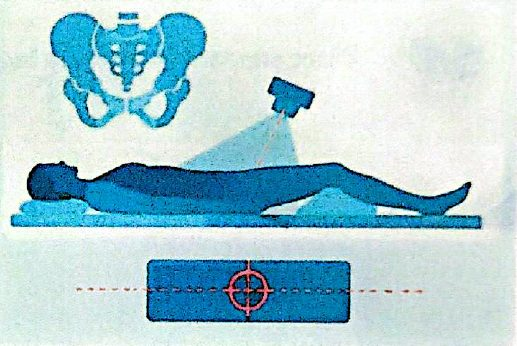
الشعاع المركزيCR
Angle CR cephalad 20° to 35° for males and 30° to 45° for females. (These different angles are caused by differences in the shape of male and female pelves.)
أمِل الشعاع المركزي باتجاه الرأس 20 إلى 35 درجة للذكور، و30 إلى 45 درجة للإناث. (وهذه الزوايا المختلفة سببها اختلاف شكل حوض الذكر عن حوض الأنثى.)
Direct CR to a midline point 1 to 2 inches (3 to 5 cm) distal to the superior border of the symphysis pubis or greater trochanters.
وجِّه الشعاع المركزي إلى نقطة على الخط الأوسط، أسفل الحافة العليا للارتفاق العاني أو المدوّرين الكبيرين بـ 1 إلى 2 إنش (3 إلى 5 سم).
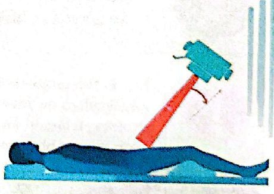
التشريح الظاهرAnatomy Demonstrated
Superior and inferior rami of pubis and body and ramus of ischium are demonstrated well, with minimal foreshortening or superimposition.
يظهر الفرعان العلوي والسفلي للعانة، وجسم الإسك وفرعه، بوضوح، مع أقل قدر من التقصير أو التراكب.
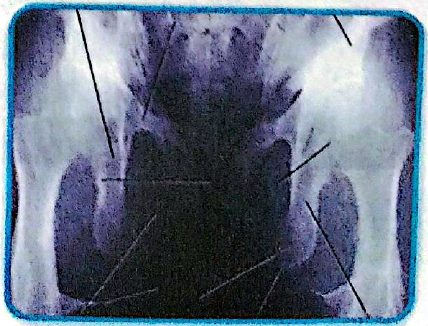
4- الإسقاط AP المحوري لمدخل الحوض4. AP axial inlet projection
دواعي الفحصClinical Indications
Assessment of pelvic trauma for posteriordisplacement or inward or outward rotation of the anterior pelvis
تقييم إصابات الحوض من حيث الإزاحة الخلفية، أو الدوران إلى الداخل أو إلى الخارج للجزء الأمامي من الحوض.
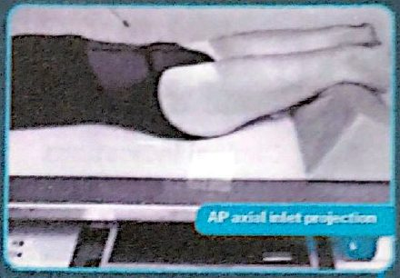
وضعية المريضPatient Position
With patient supine, provide pillow for head. With patient's legs extended, place support under knees for comfort.
المريض مستلقٍ على ظهره، ونضع وسادة للرأس. والساقان ممدودتان، ونضع دعامة تحت الركبتين للراحة.
وضعية الجزء المصوَّرPart Position
- • Align midsagittal plane to CR and to midline of table and/or IR.طابِق المستوى السهمي الناصف مع الشعاع المركزي ومع الخط الأوسط للطاولة و/أو مستقبِل الصورة.
- • Ensure no rotation of pelvis (ASIS-to-tabletop distance equal on both sides).تأكّد من عدم دوران الحوض (مسافة ASIS إلى سطح الطاولة متساوية في الجانبين).
- • Center IR to projected CR.مركِز مستقبِل الصورة على موضع الشعاع المركزي المُسقَط.
الشعاع المركزيCR
Angle CR caudad 40° (near perpendicular to plane of inlet).
أمِل الشعاع المركزي باتجاه القدمين 40 درجة (قريباً من العمودي على مستوى المدخل).
Direct CR to a midline point at level of ASIS
وجِّه الشعاع المركزي إلى نقطة على الخط الأوسط عند مستوى ASIS.
التشريح الظاهرAnatomy Demonstrated
This is an axial projection that demonstrates pelvic ring or inlet (superior aperture) in its entirety.
هذا إسقاط محوري يُظهر حلقة الحوض أو مدخله (الفتحة العليا) بالكامل.
الوقاية (التدريع)Shielding
Shield radiosensitive tissues outside region of interest.
احمِ الأنسجة الحساسة للإشعاع خارج المنطقة المطلوبة.
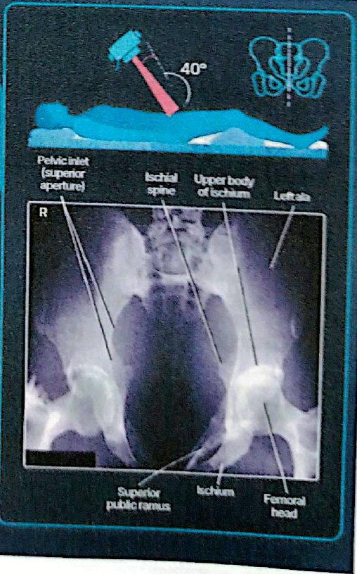
5- الإسقاط المائل الخلفي للحوض – الحُقّ (طريقة جوديه)5. Posterior oblique Pelvis–acetabulum (Judet method)
Judet method
طريقة جوديه.
دواعي الفحصClinical Indications
Acetabular fracture or pelvis injury Right and left oblique projections generally are taken for comparison, with both centered for upside or both for downside acetabulum
كسر الحُقّ أو إصابة الحوض. وتُؤخذ عادةً الإسقاطات المائلة اليمنى واليسرى للمقارنة، وكلاهما ممركز على الحُقّ العلوي، أو كلاهما على الحُقّ السفلي.
وضعية المريضPatient Position
Posterior Oblique Positions
الوضعيات المائلة الخلفية:
With patient semisupine, provide pillow for head and position for affected side up or down, depending on anatomy to be demonstrated.
المريض في وضع نصف استلقاء، ونضع وسادة للرأس، ويكون الجانب المصاب إلى الأعلى أو إلى الأسفل حسب التشريح المطلوب إظهاره.
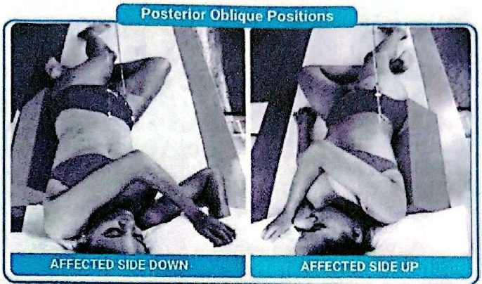
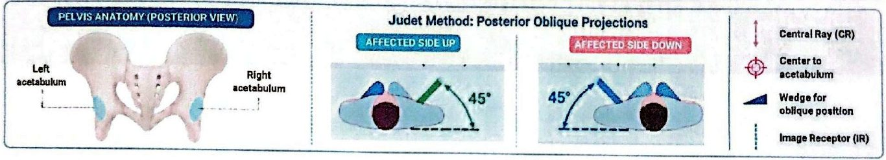
وضعية الجزء المصوَّرPart Position
- • Place patient in 45° posterior oblique, with both pelvis and thorax 45° from tabletop. Support with wedge sponge.ضع المريض بوضع مائل خلفي 45 درجة، والحوض والصدر كلاهما بزاوية 45 درجة عن سطح الطاولة. وادعمه بإسفنجة إسفينية.
- • Align femoral head and acetabulum of interest to midline of tabletop and/or IR.طابِق رأس عظم الفخذ والحُقّ المطلوبين مع الخط الأوسط لسطح الطاولة و/أو مستقبِل الصورة.
- • Center IR longitudinally to CR at level of femoral head.مركِز مستقبِل الصورة طولياً على الشعاع المركزي عند مستوى رأس عظم الفخذ.
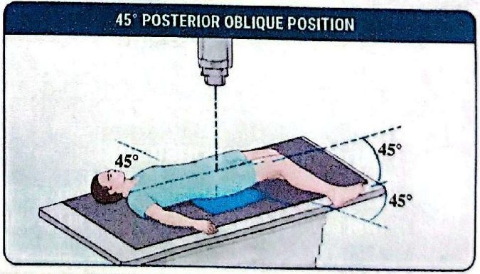
الشعاع المركزيCR
- • When anatomy of interest is downside, direct CR perpendicular and centered to 2 inches (5 cm) distal and 2 inches (5 cm) medial to downside ASIS.عندما يكون التشريح المطلوب في الجانب السفلي، وجِّه الشعاع المركزي عمودياً وممركزاً على نقطة أسفل ASIS السفلية بـ 2 إنش (5 سم) وإلى الداخل منها بـ 2 إنش (5 سم).
- • When anatomy of interest is upside, direct perpendicular and centered to 2 inches (5 cm) directly distal to upside ASIS.عندما يكون التشريح المطلوب في الجانب العلوي، وجِّه الشعاع عمودياً وممركزاً على نقطة أسفل ASIS العلوية مباشرة بـ 2 إنش (5 سم).
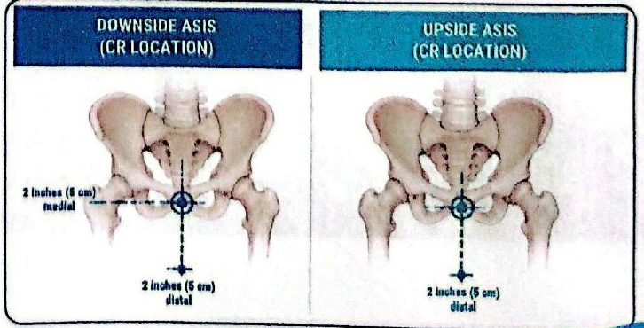
التشريح الظاهرAnatomy Demonstrated
- 1. When centered to the downside acetabulum, the anterior rim of the acetabulum and the posterior (ilioischial) column are demonstrated. The iliac wing also is well visualized.عند التمركز على الحُقّ السفلي، تظهر الحافة الأمامية للحُقّ والعمود الخلفي (الحرقفي الإسكي). ويظهر جناح الحرقفة أيضاً بوضوح.
- 2. When centered to the upside acetabulum, the posterior rim of the acetabulum and the anterior (iliopubic) column are demonstrated. The obturator foramen also is visualizedعند التمركز على الحُقّ العلوي، تظهر الحافة الخلفية للحُقّ والعمود الأمامي (الحرقفي العاني). وتظهر الثقبة السدّادية أيضاً.
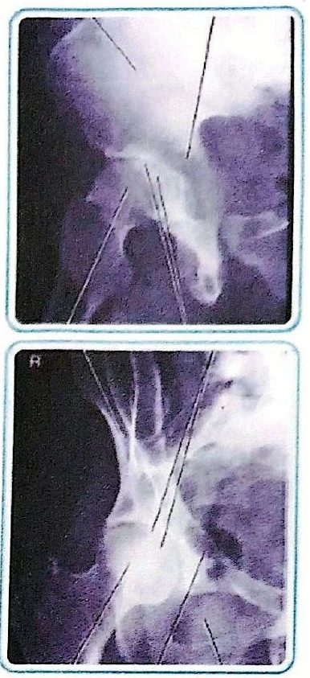
المحاضرة مسموعة
نص الأستاذ بالإنكليزي مثل الأصل · 8.3 دقيقة. اضغط أي جملة تسمعها، أو مصطلح منقّط تسمع لفظه ومعناه.
Projections Pelvisإسقاطات الحوض
Projections Pelvis
AP Pelvis projection (bilateral hips): Pelvis
AP bilateral frog-leg projection: Pelvis
AP axial outlet projection
AP axial inlet projection*: Pelvis
Posterior oblique Pelvis–acetabulum
Pelvis Anatomyتشريح الحوض
Pelvis Anatomy
(1) Ilium
(2) Ischium
(3) Pubis
Acetabulum
PELVIS RADIOGRAPHY
1. AP Pelvis projection (bilateral hips): Pelvis1- إسقاط AP للحوض (الوركان معاً)
1. AP Pelvis projection (bilateral hips): Pelvis
CLINICAL INDICATIONS
Fractures, joint dislocations, degenerative disease, and bone lesions
PATIENT POSITION
Patient supine, place arms at sides or across superior chest, provide pillow for head and support for under knees
PART POSITION
Align midsagital plane of patient to centerline of table and to CR.
Ensure that pelvis is not rotated; distance from tabletop to each ASIS should be equal.
Separate legs and feet, then internally rotate long axes of feet and lower limbs 15° to 20°
CR
CR is perpendicular to IR, directed midway between level of ASIS and the symphysis pubis. This is approximately 2 inches (5 cm)inferior to level of ASIS.
Center IR to CR
Anatomy Demonstrated
Pelvic girdle, L5, sacrum and coccyx, femoral heads and neck, and greater trochanters are visible
WARNING: Do not attempt to rotate legs internally if a hip fracture or dislocation is suspected.
CR
CR is perpendicular to IR, directed midway between level of ASIS and the symphysis pubis. This is approximately 2 inches (5 cm) inferior to level of ASIS.
Center IR to CR
Anatomy Demonstrated
Pelvic girdle, L5, sacrum and coccyx, femoral heads and neck, and greater trochanters are visible.
WARNING: Do not attempt to rotate legs internally if a hip fracture or dislocation is suspected.
2. AP bilateral frog-leg projection: Pelvis (Modified cleaves method)2- إسقاط AP الثنائي بوضعية ساق الضفدع
2. AP bilateral frog-leg projection: Pelvis (Modified cleaves method)
Modified cleaves method
Clinical Indications
Demonstration of a nontrauma hip
Developmental dysplasia of hip (DDH), also known as congenital hip dislocation (CHD).
Patient Position
With patient supine, provide pillow for head and place arms across chest.
Part Position
Align patient to midline of table and/or IR and to CR.
Ensure pelvis is not rotated (equal distance of ASIS to tabletop).
Center IR to CR, at level of femoral heads, with top of IR Approximately at level of iliac crest.
Flex both knees approximately 90°, as demonstrated.
Place the plantar surfaces of feet together and abduct both femora 40° to 45° from vertical. Ensure that both femora are abducted the same amount and that pelvis is not rotated.
Place supports under each leg for stabilization if needed.
CR
CR is perpendicular to IR, directed to a point 3 inches (7.5 cm) below level of ASIS (1 inch [2.5 cm] above symphysis pubis).
NOTE: This projection frequently is performed for periodic follow-up examinations on younger patients. Correct placement of gonadal shielding is important for male and female patients, ensuring that hip joints are not obscured.
Anatomy Demonstrated
Femoral heads and necks, acetabulum, and trochanteric areas are visible on one radiograph.
3. AP axial outlet projection (for anterior-inferior pelvic bones): Taylor method3- الإسقاط AP المحوري لمخرج الحوض (طريقة تايلور)
3. AP axial outlet projection (for anterior-inferior pelvic bones): Taylor method
(for anterior-inferior pelvic bones): Taylor method
Clinical Indications
Bilateral view of the bilateral pubis and ischium to allow assessment of pelvic trauma for fractures and displacement
Patient Position
With patient supine, provide pillow for head. With patient's legs extended, place support under knees for comfort.
Part Position
Align midsagittal plane to CR and to midline of table and/or IR.
Ensure no rotation of pelvis (ASIS-to-tabletop distance equal on both sides).
Center IR to projected CR..
CR
Angle CR cephalad 20° to 35° for males and 30° to 45° for females. (These different angles are caused by differences in the shape of male and female pelves.)
Direct CR to a midline point 1 to 2 inches (3 to 5 cm) distal to the superior border of the symphysis pubis or greater trochanters.
Anatomy Demonstrated
Superior and inferior rami of pubis and body and ramus of ischium are demonstrated well, with minimal foreshortening or superimposition.
4. AP axial inlet projection4- الإسقاط AP المحوري لمدخل الحوض
4. AP axial inlet projection
Clinical Indications
Assessment of pelvic trauma for posteriordisplacement or inward or outward rotation of the anterior pelvis
Patient Position
With patient supine, provide pillow for head. With patient's legs extended, place support under knees for comfort.
Part Position
Align midsagittal plane to CR and to midline of table and/or IR.
Ensure no rotation of pelvis (ASIS-to-tabletop distance equal on both sides).
Center IR to projected CR.
CR
Angle CR caudad 40° (near perpendicular to plane of inlet).
Direct CR to a midline point at level of ASIS
Anatomy Demonstrated
This is an axial projection that demonstrates pelvic ring or inlet (superior aperture) in its entirety.
Shielding
Shield radiosensitive tissues outside region of interest.
5. Posterior oblique Pelvis–acetabulum (Judet method)5- الإسقاط المائل الخلفي للحوض – الحُقّ (طريقة جوديه)
5. Posterior oblique Pelvis–acetabulum (Judet method)
Judet method
Clinical Indications
Acetabular fracture or pelvis injury Right and left oblique projections generally are taken for comparison, with both centered for upside or both for downside acetabulum
Patient Position
Posterior Oblique Positions
With patient semisupine, provide pillow for head and position for affected side up or down, depending on anatomy to be demonstrated.
Part Position
Place patient in 45° posterior oblique, with both pelvis and thorax 45° from tabletop. Support with wedge sponge.
Align femoral head and acetabulum of interest to midline of tabletop and/or IR.
Center IR longitudinally to CR at level of femoral head.
CR
When anatomy of interest is downside, direct CR perpendicular and centered to 2 inches (5 cm) distal and 2 inches (5 cm) medial to downside ASIS.
When anatomy of interest is upside, direct perpendicular and centered to 2 inches (5 cm) directly distal to upside ASIS.
Anatomy Demonstrated
When centered to the downside acetabulum, the anterior rim of the acetabulum and the posterior (ilioischial) column are demonstrated. The iliac wing also is well visualized.
When centered to the upside acetabulum, the posterior rim of the acetabulum and the anterior (iliopubic) column are demonstrated. The obturator foramen also is visualized
كل أسئلة المحاضرة: السؤال إنكليزي وتحته عربي، وكل خيار بلغتين، والجواب الصحيح معلّم ويّاه «ليش صح» · 0.3 MB
قراءة الأسئلة تحميلاضغط أي مصطلح منقّط تسمع لفظه ومعناه.